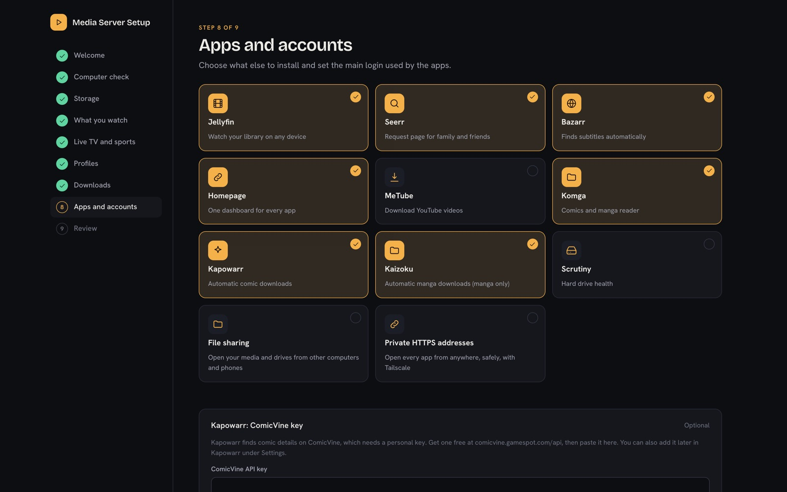
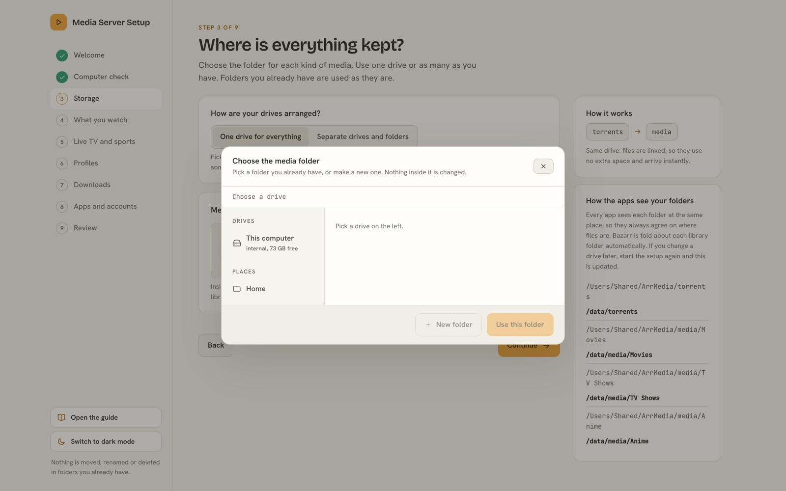
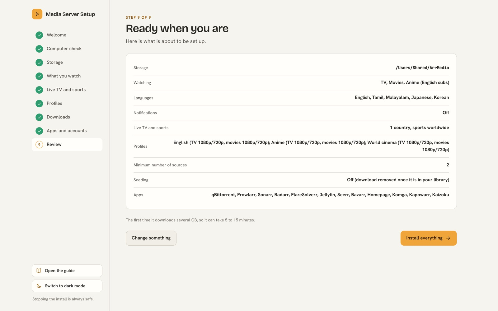
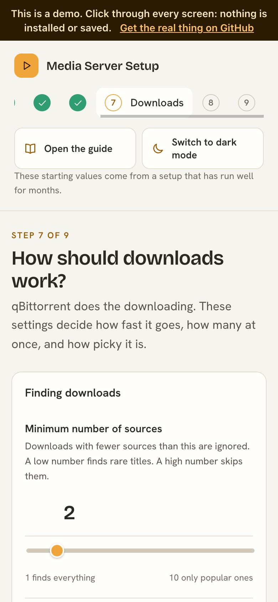

Free and open source · Windows, Mac, Linux, home servers
Your own streaming service. One line to install.
Movies, shows, anime, comics and manga that find, download and organise themselves. You answer a few questions. It sets up every app, links them, and tries a real search to prove it works.
Paste this into a terminal
curl -fsSL https://raw.githubusercontent.com/Hikki-dev/media-server-setup/main/install.sh | bashNo terminal needed
- Download the project and unzip it.
- Double click Start on Windows.bat.
Needs Docker. The command checks for it, and shows its download page if it is missing. Then your browser opens the setup page.
Watch it in a minute and a half
A real walk through the setup page: picking a drive, choosing apps, and the install. There is no sound. The captions say what is happening.
See it before you install it
The demo is the real setup page with pretend answers. Click through every screen. Nothing is installed or saved.




What it sets up
Each app does one small job. The setup installs the ones you pick and connects them.
 JellyfinWatch movies, shows, anime and live TV on any device
JellyfinWatch movies, shows, anime and live TV on any device SeerrA page where family and friends ask for something to watch
SeerrA page where family and friends ask for something to watch SonarrFinds and downloads TV shows and anime
SonarrFinds and downloads TV shows and anime RadarrFinds and downloads movies
RadarrFinds and downloads movies ProwlarrKeeps the list of search sites, and tests them
ProwlarrKeeps the list of search sites, and tests them qBittorrentDoes the downloading, and stops uploading when it is done
qBittorrentDoes the downloading, and stops uploading when it is done BazarrFinds subtitles, English first
BazarrFinds subtitles, English first FlareSolverrGets searches past robot checks
FlareSolverrGets searches past robot checks KapowarrFinds and downloads comics
KapowarrFinds and downloads comics KaizokuFollows manga and downloads new chapters
KaizokuFollows manga and downloads new chapters HomepageOne page with a button for every app
HomepageOne page with a button for every app TailscaleOptional. Safe HTTPS addresses that work from anywhere
TailscaleOptional. Safe HTTPS addresses that work from anywhere
How it goes
- Run the line.It checks Docker, downloads the setup, and prints a web address.
- Answer a few questions.In your browser. What you watch, where files live, which apps to add. About 5 minutes.
- It does the rest.Installs, links every app, then runs a real search to prove it works. 5 to 15 minutes.
Stopping is always safe, and your media is never touched. Works on a Proxmox LXC and any computer with Docker.